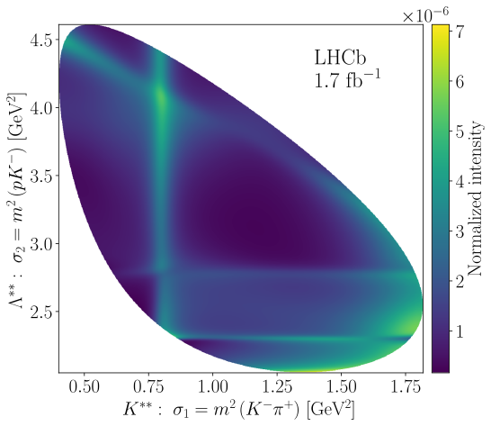
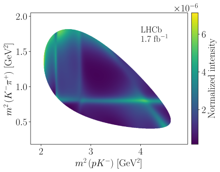
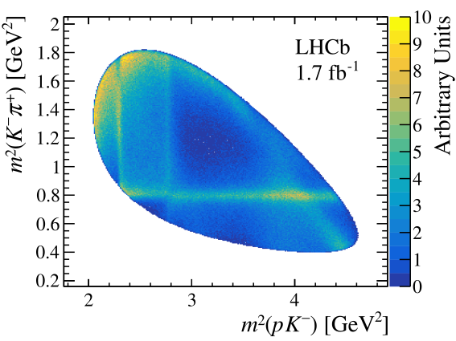
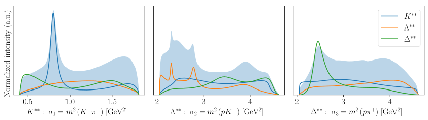
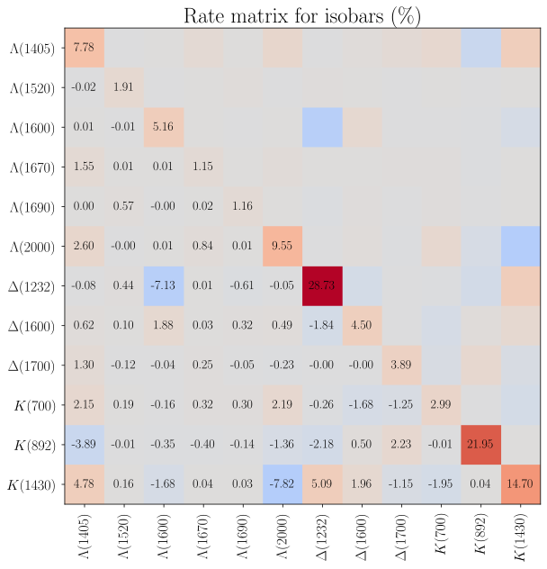
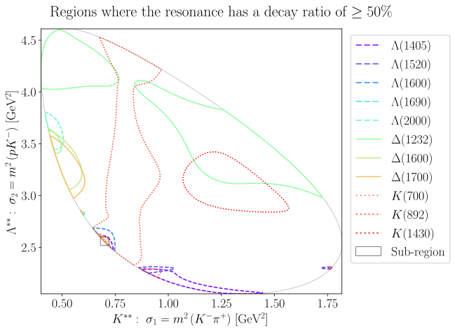
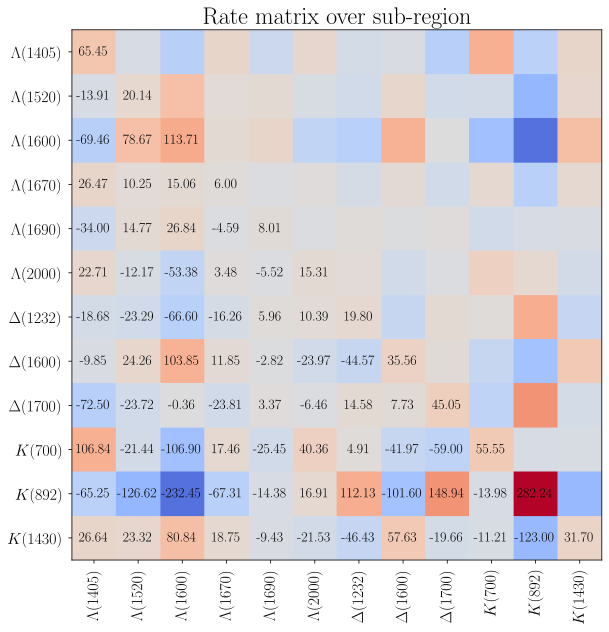

3. Intensity distribution#
unfolded_intensity_expr = cached.unfold(model) # ty:ignore[invalid-argument-type]
The complete intensity expression contains 28,430 mathematical operations.
3.1. Definition of free parameters#
free_parameters = {
symbol: value
for symbol, value in model.parameter_defaults.items()
if isinstance(symbol, sp.Indexed)
if "production" in str(symbol)
}
fixed_parameters = {
symbol: value
for symbol, value in model.parameter_defaults.items()
if symbol not in free_parameters
}
subs_intensity_expr = cached.xreplace(unfolded_intensity_expr, fixed_parameters)
After substituting the parameters that are not production couplings, the total intensity expression contains 10,252 operations.
3.2. Distribution#
intensity_func = cached.lambdify(subs_intensity_expr, parameters=free_parameters) # ty:ignore[invalid-argument-type]
transformer = create_data_transformer(model)
grid_sample = generate_meshgrid_sample(model.decay, resolution=1_000)
grid_sample = transformer(grid_sample)
X = grid_sample["sigma1"]
Y = grid_sample["sigma2"]

High-resolution image can be downloaded here: intensity-distribution.svg
{kind=link}
Comparison with Figure 2 from the original LHCb study [1]:
|
 |
 |
{kind=link}

3.3. Decay rates#
integration_sample = generate_phasespace_sample(model.decay, n_events=100_000, seed=0)
integration_sample = transformer(integration_sample)
I_tot = integrate_intensity(intensity_func(integration_sample))
I_K = sub_intensity(intensity_func, integration_sample, non_zero_couplings=["K"])
I_Λ = sub_intensity(intensity_func, integration_sample, non_zero_couplings=["L"])
I_Δ = sub_intensity(intensity_func, integration_sample, non_zero_couplings=["D"])
I_ΛΔ = interference_intensity(intensity_func, integration_sample, ["L"], ["D"])
I_KΔ = interference_intensity(intensity_func, integration_sample, ["K"], ["D"])
I_KΛ = interference_intensity(intensity_func, integration_sample, ["K"], ["L"])
np.testing.assert_allclose(I_tot, I_K + I_Λ + I_Δ + I_ΛΔ + I_KΔ + I_KΛ)

def compute_sum_over_decay_rates(rate_matrix: np.ndarray) -> float:
return rate_matrix.diagonal().sum() + np.tril(rate_matrix, k=-1).sum()
np.testing.assert_almost_equal(compute_sum_over_decay_rates(decay_rates), 1.0)
3.4. Dominant decays#


np.testing.assert_almost_equal(compute_sum_over_decay_rates(sub_decay_rates), 1.0)